Snakes of Côte d'Ivoire
105 living snake species are recorded in Côte d'Ivoire in SnakeList: 39 venomous and 66 non-venomous, from 11 families.
- 105living species
- 39venomous
- 66non-venomous
- 11families
These totals count the unique living snake species SnakeList records in Côte d'Ivoire. A species counts if it is recorded anywhere in the country, so not every snake lives in every part of it.
Species
Showing 105 species
 African Banded SnakeChamaelycus fasciatus
African Banded SnakeChamaelycus fasciatus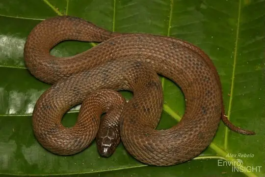
African Brown Water SnakeAfronatrix anoscopus African File SnakeLimaformosa crossi
African File SnakeLimaformosa crossi African Rock PythonPython sebae
African Rock PythonPython sebae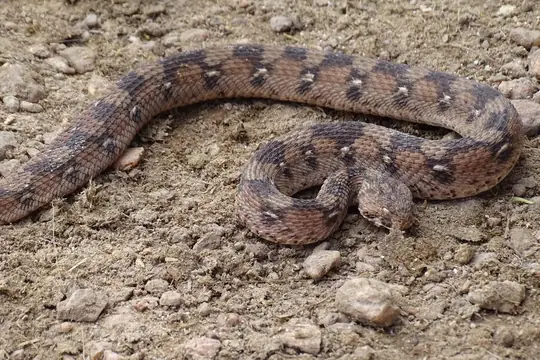
African Saw-scaled ViperEchis ocellatus- No photo yetAfrican Shovel-nosed SnakeScaphiophis albopunctatus
 African Tree CobraPseudohaje goldii
African Tree CobraPseudohaje goldii Angolan Garter SnakeElapsoidea semiannulata
Angolan Garter SnakeElapsoidea semiannulata Ball PythonPython regius
Ball PythonPython regius Beaked SkaapstekerKladirostratus acutus
Beaked SkaapstekerKladirostratus acutus- No photo yetBlack Centipede-eaterAparallactus niger
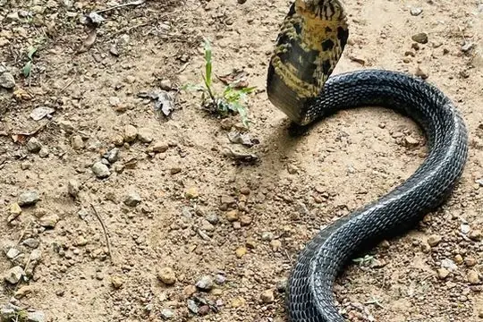
Black Forest CobraNaja guineensis Black MambaDendroaspis polylepis
Black MambaDendroaspis polylepis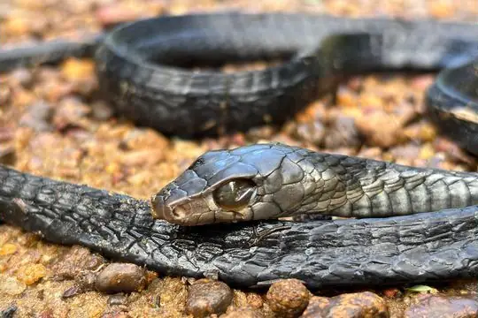
Black Tree Snake (occidentalis)Thrasops occidentalis Black-lined Green SnakeHapsidophrys lineatus
Black-lined Green SnakeHapsidophrys lineatus Black-necked Spitting CobraNaja nigricollis
Black-necked Spitting CobraNaja nigricollis Blandings Tree SnakeToxicodryas blandingii
Blandings Tree SnakeToxicodryas blandingii- No photo yetBlotched Wolf SnakeLycophidion nigromaculatum
 BoomslangDispholidus typus
BoomslangDispholidus typus Brahminy BlindsnakeIndotyphlops braminus
Brahminy BlindsnakeIndotyphlops braminus- No photo yetBroadley's Thread SnakeTricheilostoma broadleyi
 Brown House Snake (fuliginosus)Boaedon fuliginosus
Brown House Snake (fuliginosus)Boaedon fuliginosus Calabar Ground PythonCalabaria reinhardtii
Calabar Ground PythonCalabaria reinhardtii Central African Egg-eating SnakeDasypeltis fasciata
Central African Egg-eating SnakeDasypeltis fasciata Common Egg EaterDasypeltis scabra
Common Egg EaterDasypeltis scabra Confusing Egg EaterDasypeltis confusa
Confusing Egg EaterDasypeltis confusa Dull Purple-glossed SnakeAmblyodipsas unicolor
Dull Purple-glossed SnakeAmblyodipsas unicolor Eastern Crowned Smooth SnakeMeizodon regularis
Eastern Crowned Smooth SnakeMeizodon regularis Elegant Sand RacerPsammophis elegans
Elegant Sand RacerPsammophis elegans Emerald Green SnakePhilothamnus heterodermus
Emerald Green SnakePhilothamnus heterodermus Emerald SnakeHapsidophrys smaragdinus
Emerald SnakeHapsidophrys smaragdinus Equatorial File SnakeMehelya poensis
Equatorial File SnakeMehelya poensis Fischer's Cat SnakeToxicodryas pulverulenta
Fischer's Cat SnakeToxicodryas pulverulenta Flat Wolf SnakeLycophidion laterale
Flat Wolf SnakeLycophidion laterale Forest CobraNaja melanoleuca
Forest CobraNaja melanoleuca Forest Night AdderCausus lichtensteinii
Forest Night AdderCausus lichtensteinii Gaboon ViperBitis gabonica
Gaboon ViperBitis gabonica Gans' Egg EaterDasypeltis gansi
Gans' Egg EaterDasypeltis gansi Ghana Herald SnakeCrotaphopeltis hippocrepis
Ghana Herald SnakeCrotaphopeltis hippocrepis Ghana Shovel-snoutProsymna meleagris
Ghana Shovel-snoutProsymna meleagris Green Bush SnakePhilothamnus nitidus
Green Bush SnakePhilothamnus nitidus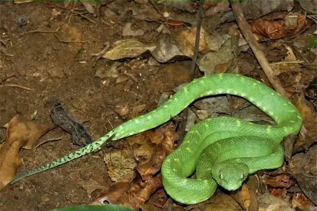
Green Bush ViperAtheris chlorechis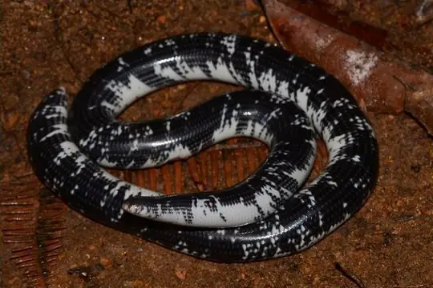
Guinea Blind SnakeAfrotyphlops liberiensis- No photo yetGuinea Snake-eaterPolemon barthii
- No photo yetGuiral's File SnakeLimaformosa guirali
 Günther's Green Tree SnakeDipsadoboa unicolor
Günther's Green Tree SnakeDipsadoboa unicolor Hallowell's House SnakeBoaedon virgatus
Hallowell's House SnakeBoaedon virgatus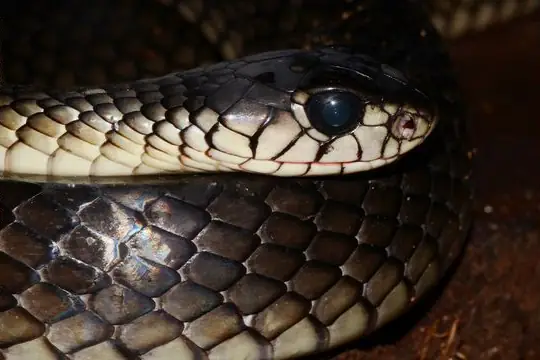
Hoodless CobraPseudohaje nigra Irregular Green SnakePhilothamnus irregularis
Irregular Green SnakePhilothamnus irregularis- No photo yetIvory Coast Snake-eaterPolemon neuwiedi
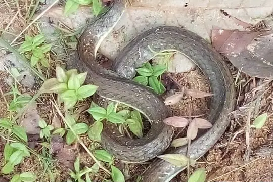
Kalahari Sand SnakePsammophis afroccidentalis Kirtland's Twig SnakeThelotornis kirtlandii
Kirtland's Twig SnakeThelotornis kirtlandii Large-eyed Green TreesnakeRhamnophis aethiopissa
Large-eyed Green TreesnakeRhamnophis aethiopissa Laurent’s Green Tree-snakeDipsadoboa viridis
Laurent’s Green Tree-snakeDipsadoboa viridis- No photo yetLined Centipede-eaterAparallactus lineatus
 Lined Olympic SnakePsammophis lineatus
Lined Olympic SnakePsammophis lineatus Lineolate Blind SnakeAfrotyphlops lineolatus
Lineolate Blind SnakeAfrotyphlops lineolatus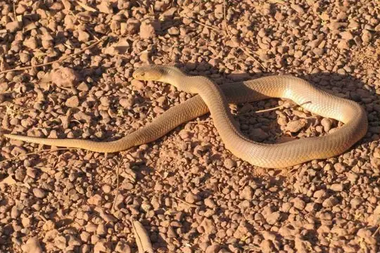
Mali CobraNaja katiensis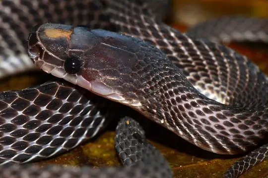
Matschie's African Ground SnakeGonionotophis klingi Mole Viper (aterrima)Atractaspis aterrima
Mole Viper (aterrima)Atractaspis aterrima Mole Viper (corpulenta)Atractaspis corpulenta
Mole Viper (corpulenta)Atractaspis corpulenta- No photo yetMole Viper (dahomeyensis)Atractaspis dahomeyensis
 Müller’s Sand BoaEryx muelleri
Müller’s Sand BoaEryx muelleri Olive Grass RacerPsammophis phillipsii
Olive Grass RacerPsammophis phillipsii Olive House Snake (olivaceus)Boaedon olivaceus
Olive House Snake (olivaceus)Boaedon olivaceus Olive Marsh SnakeNatriciteres olivacea
Olive Marsh SnakeNatriciteres olivacea Ornate Olympic SnakePsammophis praeornatus
Ornate Olympic SnakePsammophis praeornatus Pale Wolf SnakeLycophidion irroratum
Pale Wolf SnakeLycophidion irroratum Plumbeous Centipede EaterAparallactus lunulatus
Plumbeous Centipede EaterAparallactus lunulatus Puff AdderBitis arietans
Puff AdderBitis arietans Red-Black Striped SnakeBothrophthalmus lineatus
Red-Black Striped SnakeBothrophthalmus lineatus- No photo yetRed-lipped SnakeCrotaphopeltis hotamboeia
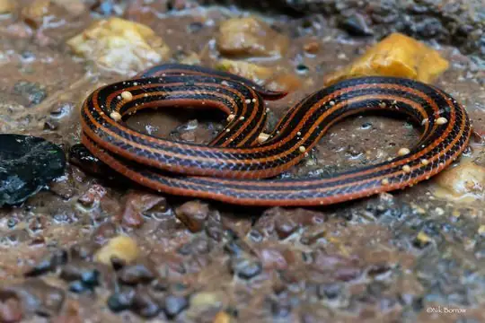
Reinhardt's Snake-eaterPolemon acanthias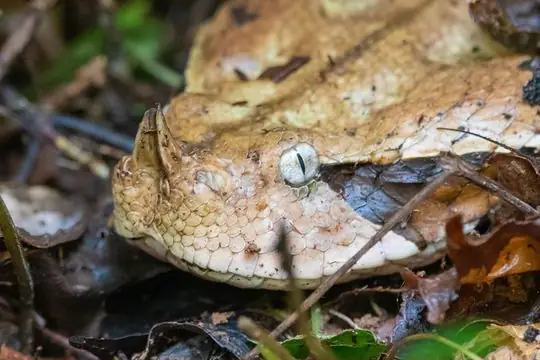
Rhinoceros ViperBitis rhinoceros Rhinoceros Viper (nasicornis)Bitis nasicornis
Rhinoceros Viper (nasicornis)Bitis nasicornis Sahel Thread SnakeMyriopholis narirostris
Sahel Thread SnakeMyriopholis narirostris- No photo yetSavanna Lesser File SnakeGonionotophis grantii
- No photo yetSenegalese CobraNaja senegalensis
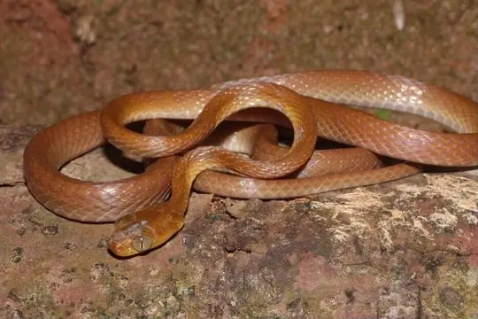
Short-snouted Tree SnakeDipsadoboa brevirostris Slender Green SnakePhilothamnus heterolepidotus
Slender Green SnakePhilothamnus heterolepidotus Small-eyed File SnakeMehelya stenophthalmus
Small-eyed File SnakeMehelya stenophthalmus Smith's African Water SnakeGrayia smithii
Smith's African Water SnakeGrayia smithii Spotted Blind SnakeAfrotyphlops punctatus
Spotted Blind SnakeAfrotyphlops punctatus Spotted Bush SnakePhilothamnus semivariegatus
Spotted Bush SnakePhilothamnus semivariegatus Spotted Night AdderCausus maculatus
Spotted Night AdderCausus maculatus Striped House SnakeBoaedon lineatus
Striped House SnakeBoaedon lineatus- No photo yetTai Hairy Bush ViperAtheris hirsuta
 Thirteen-scaled Green SnakePhilothamnus carinatus
Thirteen-scaled Green SnakePhilothamnus carinatus- No photo yetTogo SkaapstekerKladirostratus togoensis
- No photo yetTwo-colored Blind SnakeTricheilostoma bicolor
 Uganda House SnakeHormonotus modestus
Uganda House SnakeHormonotus modestus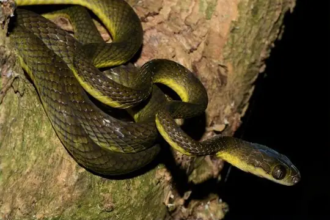
Underwood's Tree SnakeDipsadoboa underwoodi Variable Burrowing AspAtractaspis irregularis
Variable Burrowing AspAtractaspis irregularis Variable Cat SnakeTelescopus variegatus
Variable Cat SnakeTelescopus variegatus Variable Marsh Snake (variegata)Natriciteres variegata
Variable Marsh Snake (variegata)Natriciteres variegata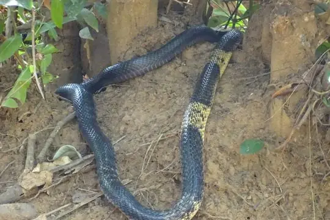
West African Banded CobraNaja savannula Western Beaked SnakeRhamphiophis oxyrhynchus
Western Beaked SnakeRhamphiophis oxyrhynchus Western Crowned SnakeMeizodon coronatus
Western Crowned SnakeMeizodon coronatus Western Forest Centipede-eaterAparallactus modestus
Western Forest Centipede-eaterAparallactus modestus Western Green MambaDendroaspis viridis
Western Green MambaDendroaspis viridis- No photo yetWhite-bellied Worm SnakeMyriopholis albiventer
 Boaedon mendesi
Boaedon mendesi Dasypeltis parascabra
Dasypeltis parascabra- No photo yetLetheobia coecatus
 Lycophidion semicinctum
Lycophidion semicinctum
No snakes in Ivory Coast match.
Ivory Coast’s snakes in numbers
- Families: Colubridae 33, Lamprophiidae 18, Atractaspididae 12, Elapidae 11, Viperidae 9, Psammophiidae 8, Typhlopidae 5, Leptotyphlopidae 4, Boidae 2, Pythonidae 2, Prosymnidae 1.
- 1 is recorded in no other country or territory in SnakeList: Broadley's Thread Snake.
How precisely they are recorded
Of the 105 living species recorded in Ivory Coast, 26 are recorded by region in SnakeList’s data; 79 are recorded only for Ivory Coast as a whole, so the region pages list them as possible rather than recorded. SnakeList records each species by region, not by exact spot, so a species listed for a region may live in only part of it.
Regions
The regions where SnakeList records snakes, with how many living species are recorded in each. Each page has its species, venomous snakes, families, the species found only there, its cities and neighbours.
- Bas-Sassandra 10 species
- Comoé 2 species
- Dix-Huit Montagnes 1 species
- Lacs 2 species
- Lagunes 7 species
- Moyen-Cavally 12 species
- Sud-Comoé 1 species
No place matches that.
Cities
Its biggest cities, biggest first. SnakeList records snakes by region, not by city, so each city page shows the species recorded in its region and, separately, those only possible there - not species confirmed in the city.
- Abidjan Lagunes
- Abobo Lagunes
- Yamoussoukro Lacs
No place matches that.